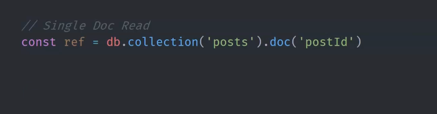
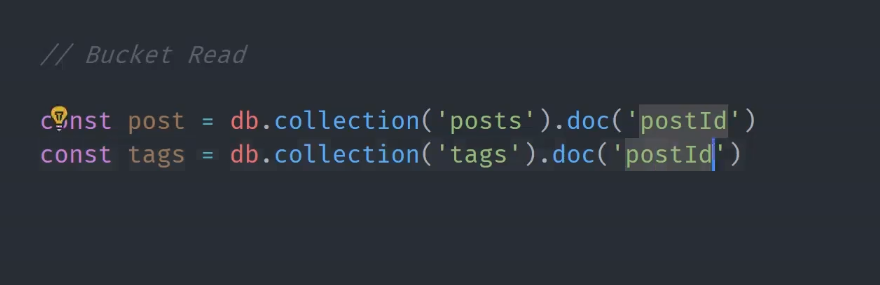
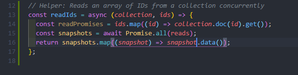

Firestore Read
To read data from a document, we have two ways to do it.
1. Read with collection document
const docRef = firestore.collection('posts').doc('postId');
2. Read with Path
const docRef = firestore.doc('/posts/postId')
- Accessing the collection or document with these two ways will return a document reference.
- We can perform CRUD operations (get() / set() / update()) on the document reference which will return Promise (snapshot).
Single Doc Read
Getting a document reference from a single document.
Bucket Read
Getting two document references from different collections with same document id.
Array of Documents in a single collection
Here is a helper function below to query an array of document IDs. This is especially useful when you have a many-to-many data model.